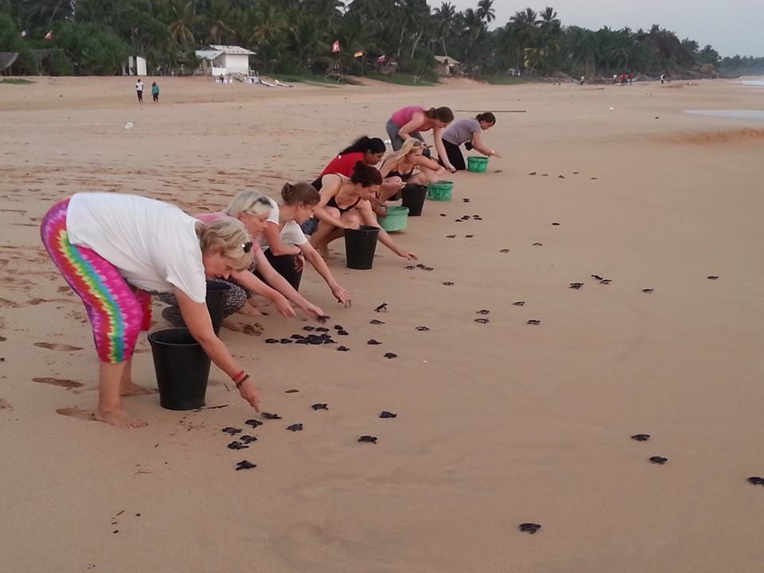
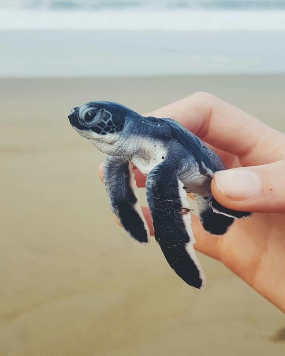
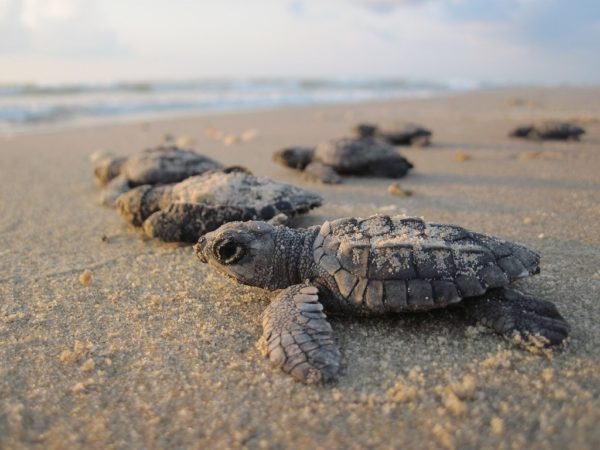
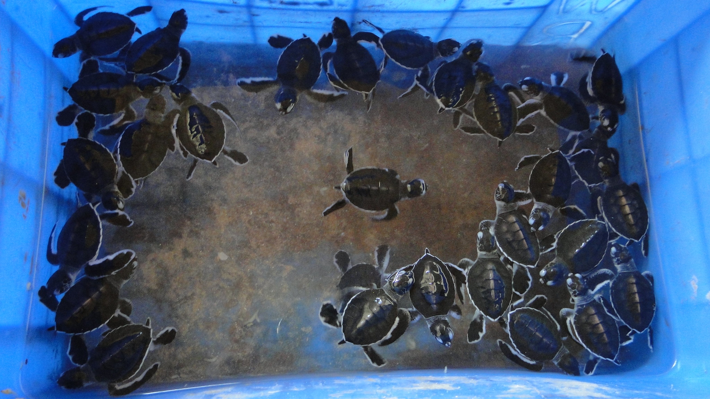
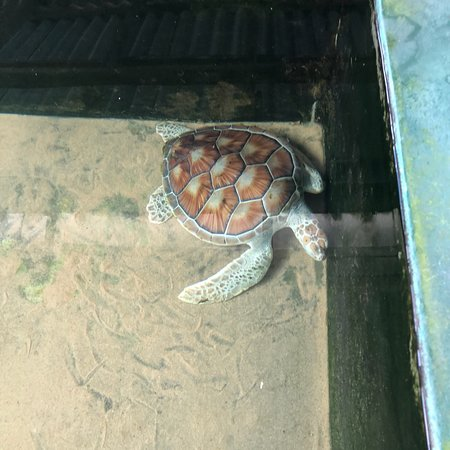
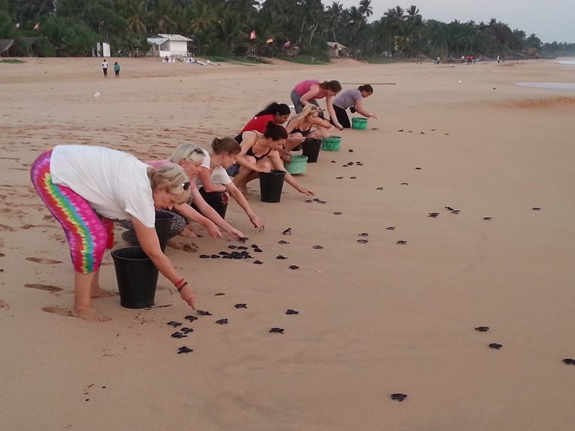
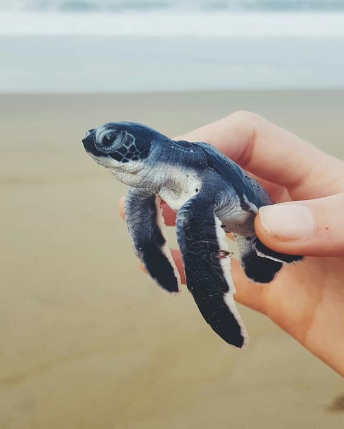
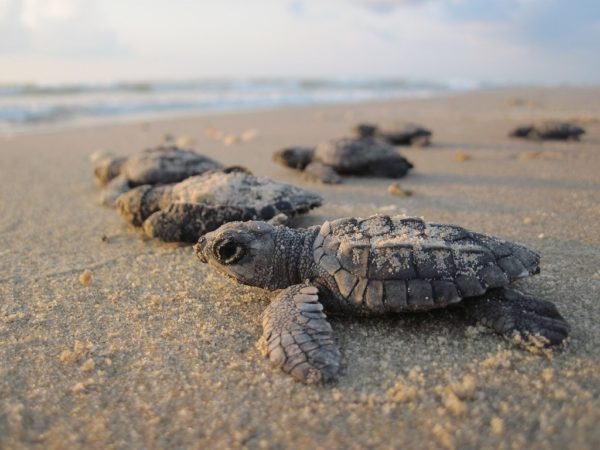
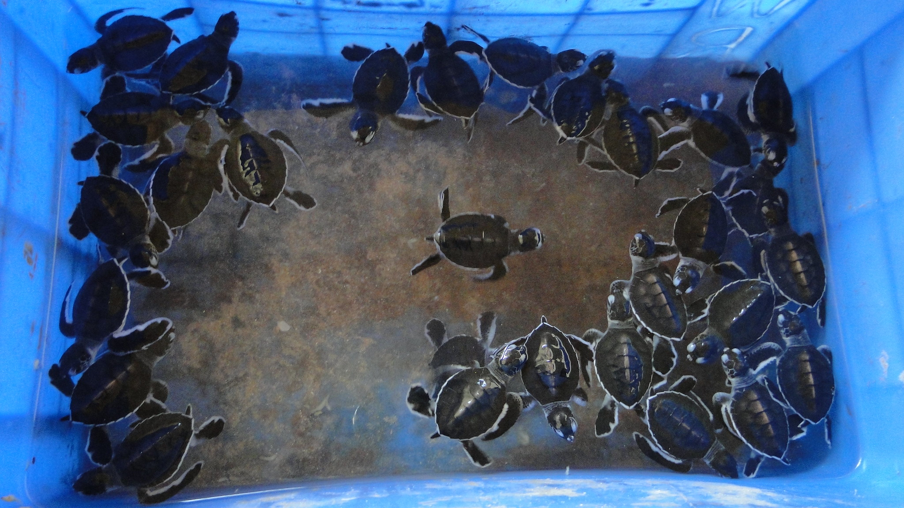
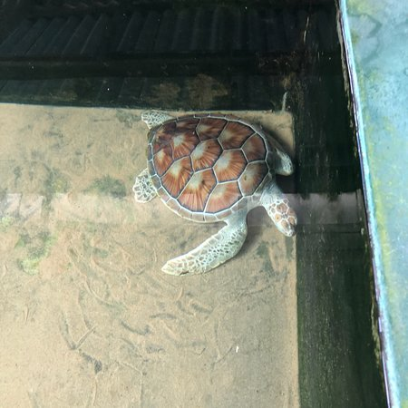

Hikkaduwa Turtle Hatchery
About Hikkaduwa Turtle Hatchery
The Sea Turtle Hatchery and Rescue Centre in Hikkaduwa is a place where you can learn about the conservation of endangered species of turtles in the world. The hatchery is just one of many turtle hatcheries in the southern coast of Sri Lanka. The centre aims to restore the populations of turtles and educate both locals and tourists. The knowledgeable staff will provide insightful information about the turtles' life cycle, nesting habits, and the challenges they face in the wild.
Activies visitors can do;
- 1. Witnessing the hatching and release of baby turtles.
The hatchery collects eggs from vulnerable nesting sites along the coast and provides a safe environment for the eggs to hatch. Visitors can observe the adorable hatchlings making their way towards the ocean, which is a truly heartwarming experience. - 2. The hatchery offers visitors the opportunity to interact with adult turtles.
That have been rescued from various threats such as fishing nets, poaching, or injuries. You can witness these magnificent creatures up close and even participate in feeding them under the guidance of the hatchery staff. - 3. Join for the educational programs and awareness campaigns.
Aiming to enlighten both locals and tourists about the importance of turtle conservation. Through these initiatives, they promote responsible tourism and encourage visitors to actively participate in protecting sea turtles and their habitats. - 4. The hatchery operates as a rehabilitation center for injured turtles.
If you encounter a turtle in distress, you can bring it to the hatchery, where the trained staff will provide necessary medical treatment and care.
Visiting the Hikkaduwa Turtle Hatchery offers a unique opportunity to learn about and contribute to the conservation of sea turtles. It allows you to witness the incredible journey of these magnificent creatures and understand the importance of preserving their fragile existence.
 








